10月02日STl图纸文件分享
j0xf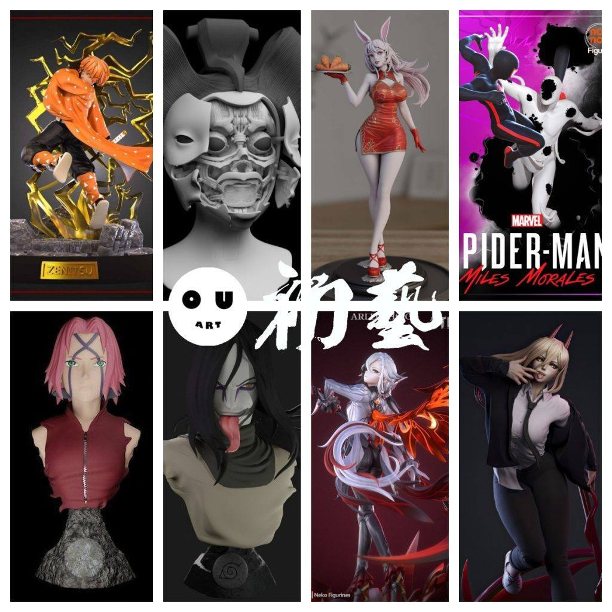
1.鬼灭之刃——我妻善逸，一体的造型，没有分件。
链接：https://pan.baidu.com/s/1uxVMM-qIl01K7bFansBx2A
提取码：j0xf
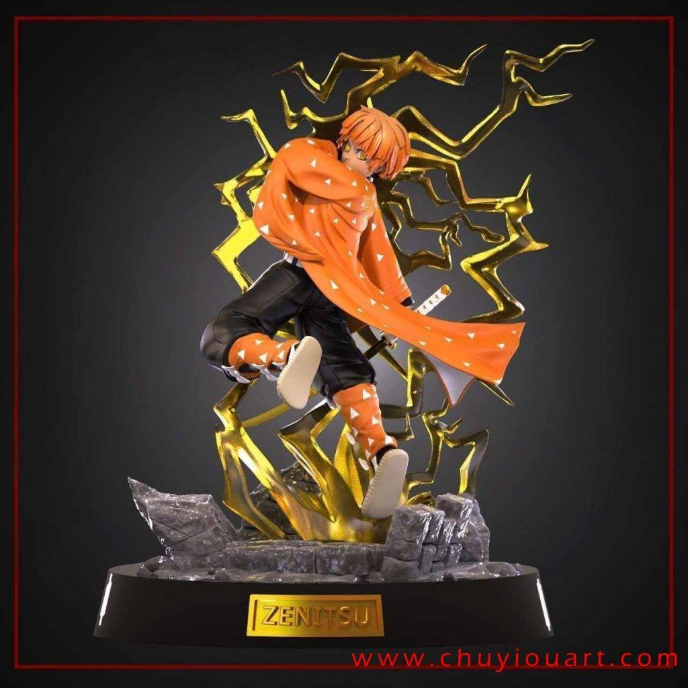

2.机械艺妓，可动设计，多形态可用。
链接：https://pan.baidu.com/s/1lfXTBj0U4G3OFWibhNc53A
提取码：z8px
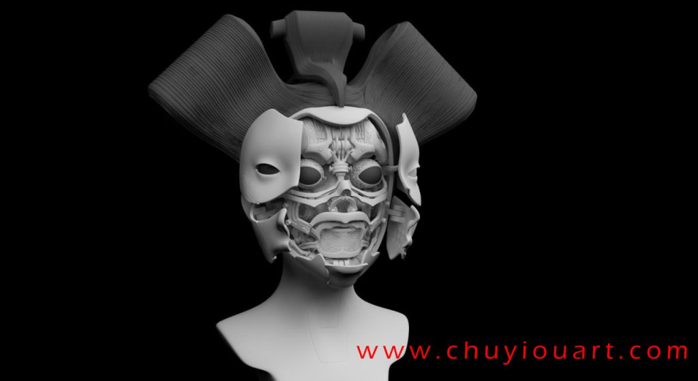
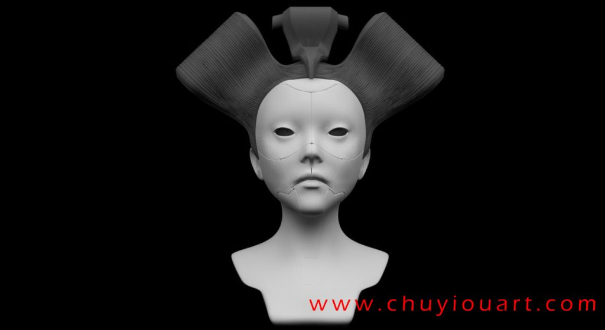

3.兔女郎，属于比较好看，又不违规的造型，分件不错。
链接：https://pan.baidu.com/s/1klGdLlz9q8SiOowCmra8bg
提取码：iak4


4.蜘蛛侠莫拉雷斯，对战瞬移哥场景，细节在线，动态可参考。
链接：https://pan.baidu.com/s/1aW6947xWmNuzHspV18t3fw
提取码：age6
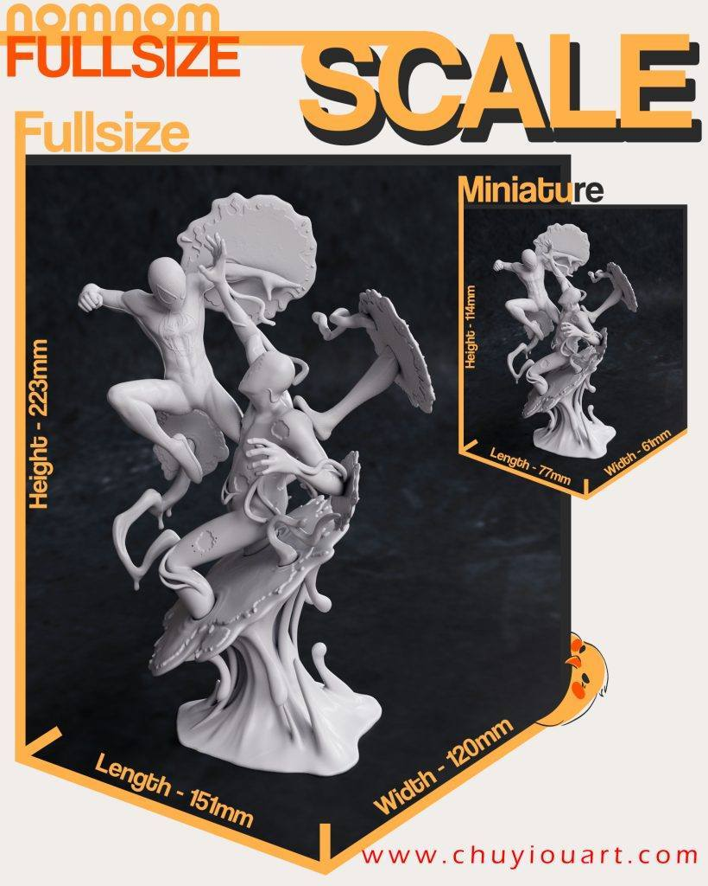
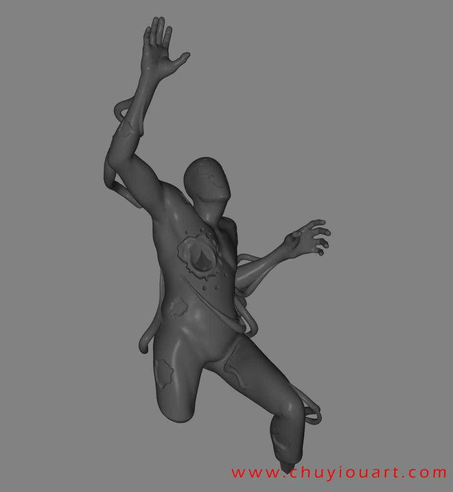
5.小樱和大蛇丸胸像，细节很好，还原度高。
小樱链接：https://pan.baidu.com/s/1I0I-zl_S36OnLUQC4p15kA
提取码：zf7v
大蛇丸链接：https://pan.baidu.com/s/1ccIaTci8hCNO8X-E7P-3Dg
提取码：fh5e
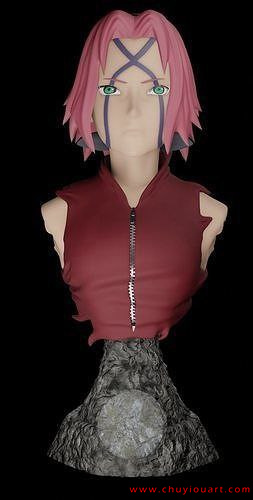

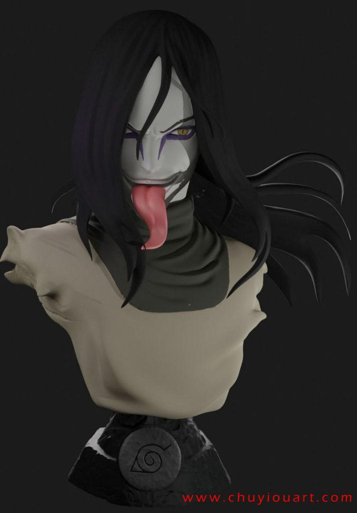

6.原神——阿蕾奇诺，分件合理，造型细节还原。
链接：https://pan.baidu.com/s/1XGGv5ku_PjsWHkhW-1maEw
提取码：ljur
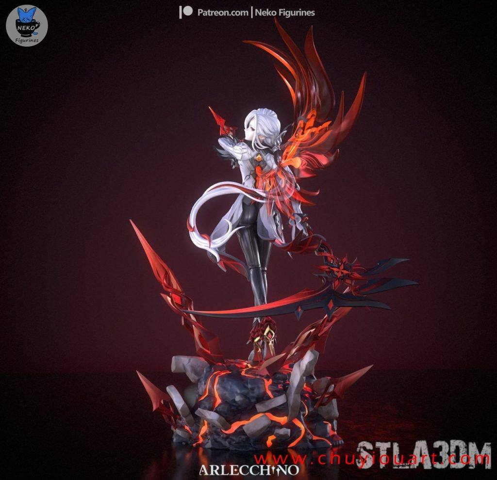

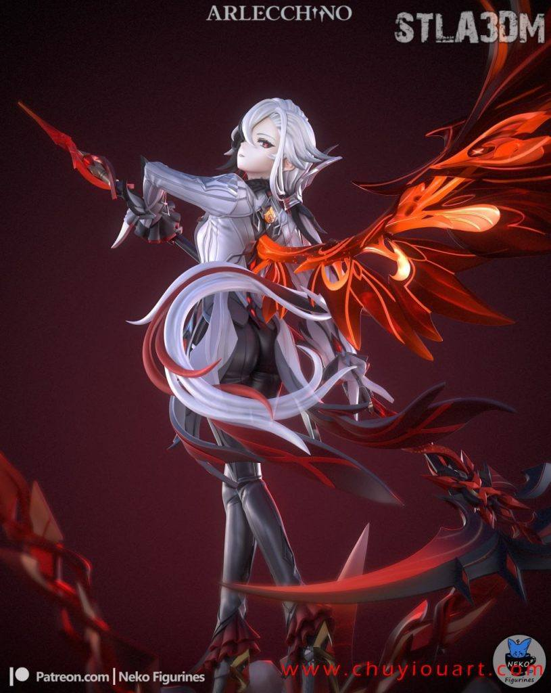
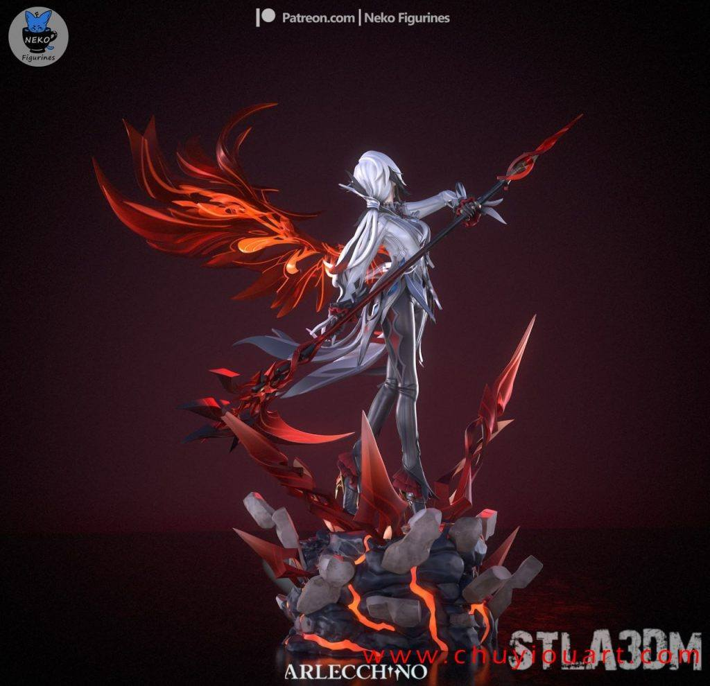
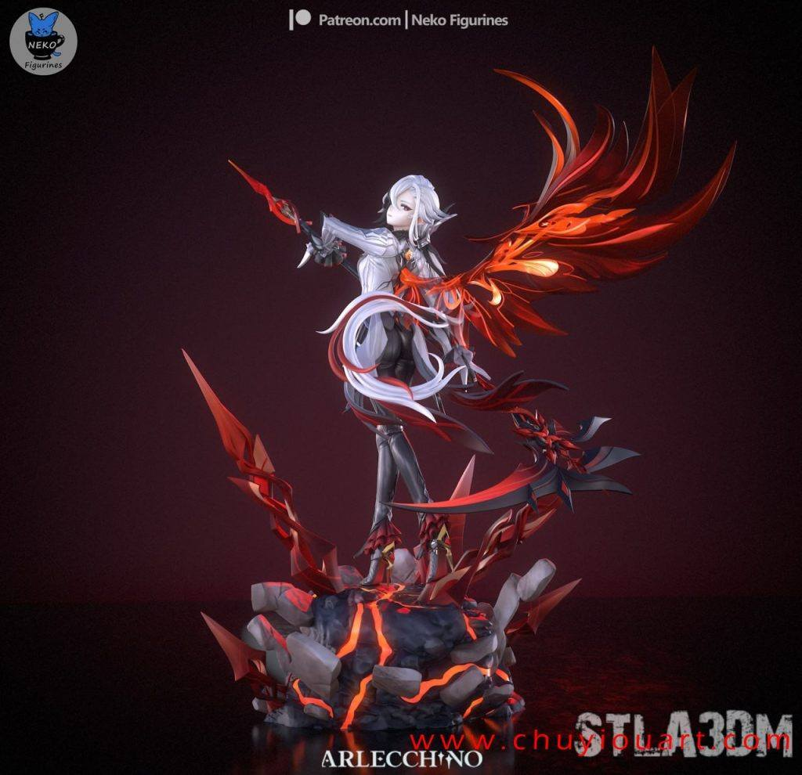
7.电锯人——帕瓦，和之前的相比还原度普通，不过细节很赞，特效件很好，推荐。
链接：https://pan.baidu.com/s/1-vOw7dYBwzvLw1ZGsbCMRw
提取码：5lt9


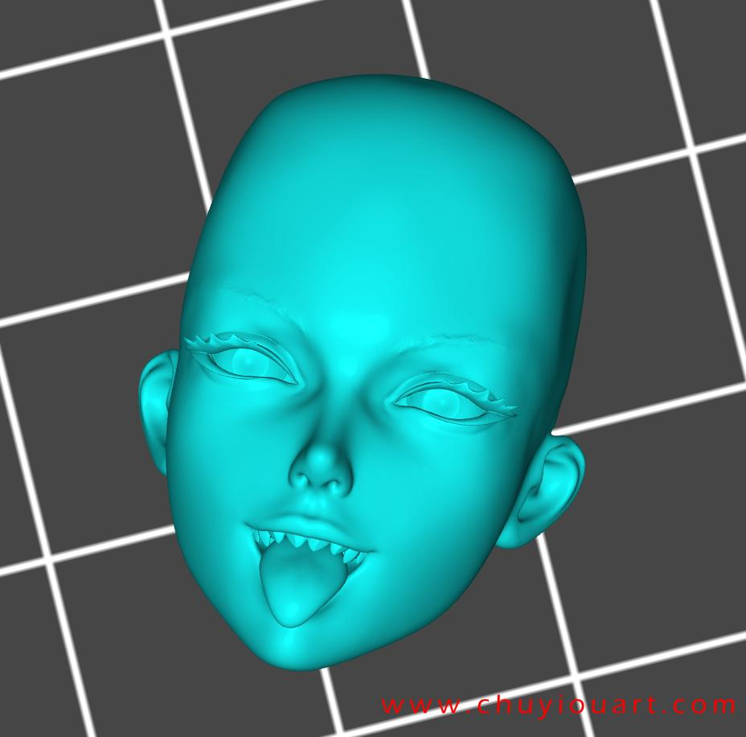
以上内容仅供个人使用（非商用）
ONLY for PERSONAL (NON-COMMERCIAL) use.
加群获得更多免费模型！